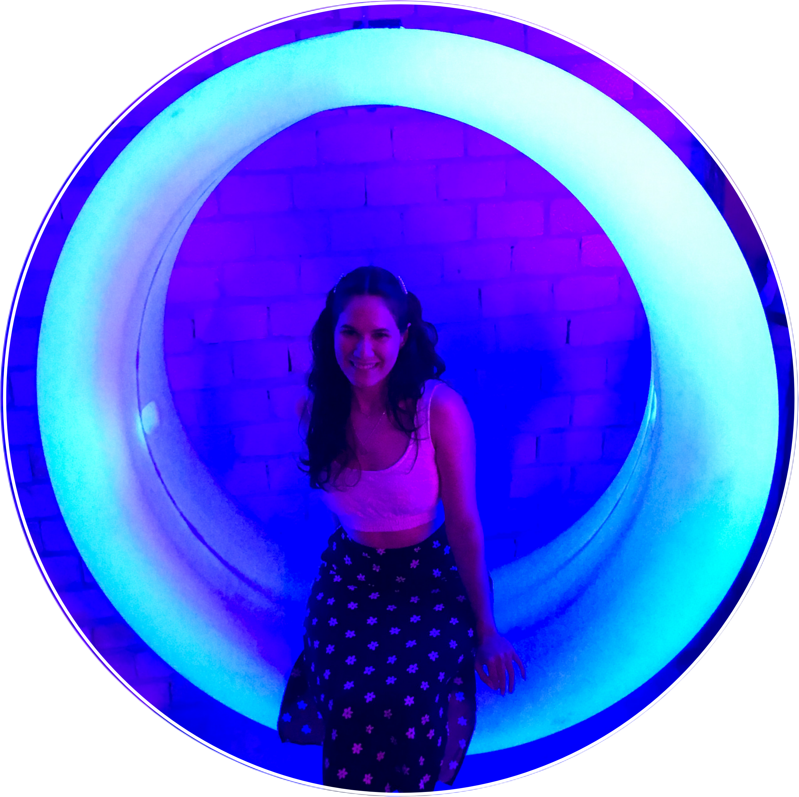

Isabel Ribeiro
Desenvolvedora em formação
Estudante de Análise e Desenvolvimento de Sistemas na Uninter e Biotecnologista formada pela Federal do Ceará. Almejo me tornar uma desenvolvedora back-end e construir uma carreira sólida no mundo da tecnologia.
Saiba mais!
